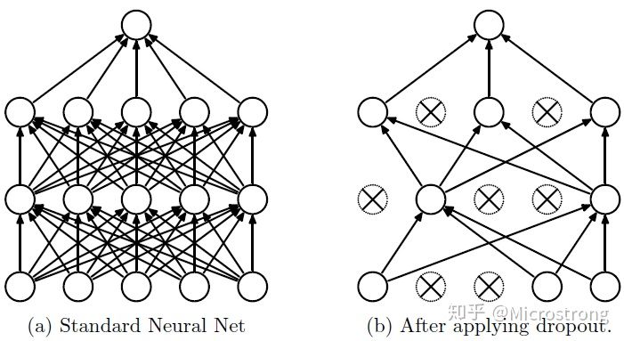
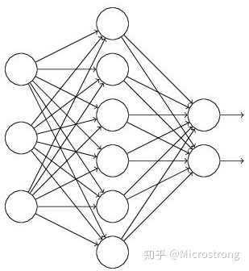
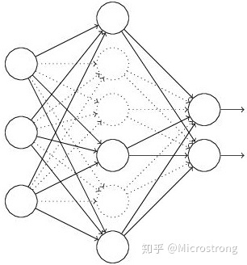
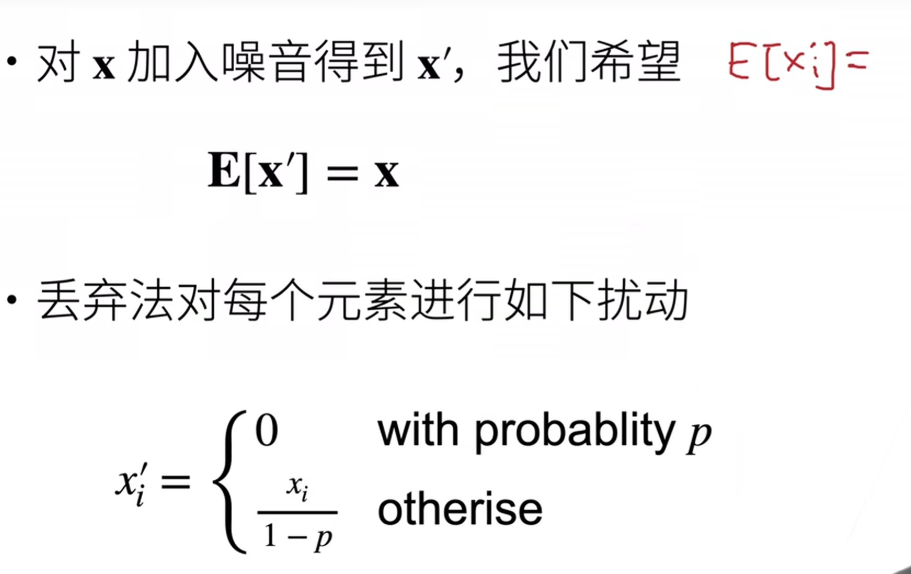

pytorch net.train() or net.eval()
pytorch中net.train()和net.eval()
a) model.eval()，不启用 BatchNormalization 和 Dropout。此时pytorch会自动把BN和Dropout固定住，不会取平均，而是用训练好的值。不然的话，一旦test的batch_size过小，很容易就会因BN层导致模型performance损失较大；
b) model.train() ：启用 BatchNormalization 和 Dropout。 在模型测试阶段使用model.train() 让model变成训练模式，此时 dropout和batch normalization的操作在训练q起到防止网络过拟合的问题。
model.eval() 负责改变batchnorm、dropout的工作方式，如在eval()模式下，dropout是不工作的。 见下方代码：
1 | import torch |
torch.no_grad() 负责关掉梯度计算，节省eval的时间。
只进行inference时，model.eval()是必须使用的，否则会影响结果准确性。 而torch.no_grad()并不是强制的，只影响运行效率。
batch_normalization(BN)
归一化（normalization）
将一批不太标准的数据统一到指定的格式
reason of BN
宏观介绍
随着网络的深度增加，每层特征值分布会逐渐的向激活函数的输出区间的上下两端（激活函数饱和区间）靠近，这样继续下去就会导致梯度消失。BN就是通过方法将该层特征值分布重新拉回标准正态分布，特征值将落在激活函数对于输入较为敏感的区间，输入的小变化可导致损失函数较大的变化，使得梯度变大，避免梯度消失，同时也可加快收敛，加快训练速度。
术语概念
对于每个隐层神经元，把逐渐向非线性函数映射后向取值区间极限饱和区靠拢的输入分布强制拉回到均值为0方差为1的比较标准的正态分布，使得非线性变换函数的输入值落入对输入比较敏感的区域，以此避免梯度消失问题。因为梯度一直都能保持比较大的状态，所以很明显对神经网络的参数调整效率比较高，就是变动大，就是说向损失函数最优值迈动的步子大，也就是说收敛地快。BN说到底就是这么个机制，方法很简单，道理很深刻。
详细参见：https://www.cnblogs.com/guoyaohua/p/8724433.html
effect in train
- 减少梯度消失，加快了收敛过程。
- 起到类似dropout一样的正则化能力，一定程度上防止过拟合。
- 放宽了一定的调参要求。
注意
需要计算均值与方差，不适合动态网络或者RNN。计算均值方差依赖每批次，因此数据最好足够打乱。
Dropout
Dropout可以作为训练深度神经网络的一种trick供选择。在每个训练批次中，通过忽略一半的特征检测器（让一半的隐层节点值为0），可以明显地减少过拟合现象。这种方式可以减少特征检测器（隐层节点）间的相互作用，检测器相互作用是指某些检测器依赖其他检测器才能发挥作用。
简单来说
Dropout说的简单一点就是：我们在前向传播的时候，让某个神经元的激活值以一定的概率p停止工作，这样可以使模型泛化性更强，因为它不会太依赖某些局部的特征，如图1所示。

Dropout工作流程及使用
Dropout具体工作流程
假设我们要训练这样一个神经网络，如图2所示。

输入是x输出是y，正常的流程是：我们首先把x通过网络前向传播，然后把误差反向传播以决定如何更新参数让网络进行学习。使用Dropout之后，过程变成如下：
（1）首先随机（临时）删掉网络中一半的隐藏神经元，输入输出神经元保持不变（图3中虚线为部分临时被删除的神经元）

（2） 然后把输入x通过修改后的网络前向传播，然后把得到的损失结果通过修改的网络反向传播。一小批训练样本执行完这个过程后，在没有被删除的神经元上按照随机梯度下降法更新对应的参数（w，b）。
（3）然后继续重复这一过程：
- 恢复被删掉的神经元（此时被删除的神经元保持原样，而没有被删除的神经元已经有所更新）
- 从隐藏层神经元中随机选择一个一半大小的子集临时删除掉（备份被删除神经元的参数）。
- 对一小批训练样本，先前向传播然后反向传播损失并根据随机梯度下降法更新参数（w，b） （没有被删除的那一部分参数得到更新，删除的神经元参数保持被删除前的结果）。
不断重复这一过程。
具体见 https://zhuanlan.zhihu.com/p/38200980
动手学深度学习-方法

通过一定的概率变为0，一定的概率放大值，从而保证数学期望值不变。 可以理解成每次在隐藏层中随机选取一些神经元来进行训练，其中丢弃概率p是控制模型复杂度的超参数